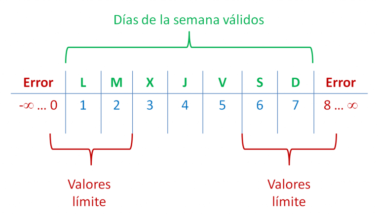

La técnica de análisis de los valores límite se basa en el hecho heurístico de que los errores tienden a producirse con más probabilidad en los valores extremos de los posibles valores de entrada.
Esta técnica, que puede considerarse una expansión de la idea de partición de equivalencia, se puede usar siempre que la entrada a analizar tenga definidos esos límites en la especificación de los requerimientos. En realidad no es que se pueda, sino que se debe usar en tales casos.
Los valores elegidos para los casos de prueba son justo aquellos que están por encima o por debajo de los márgenes de las clases de equivalencia.
Si una condición para un dato de entrada i especifica un rango de valores definido como n <= i <=m, los casos de prueba resultantes de aplicar el análisis de valores límite corresponden a n-1, n, n+1, m-1, m y m+1.
Por ejemplo, si el dato de entrada corresponde a un número que nos indica el día de la semana en el que estamos, deberíamos definir el rango de valores válidos como: 1 <= día <=7. En ese caso, los casos de prueba resultantes a aplicar serían 0, 1, 2, 6, 7 y 8.
'